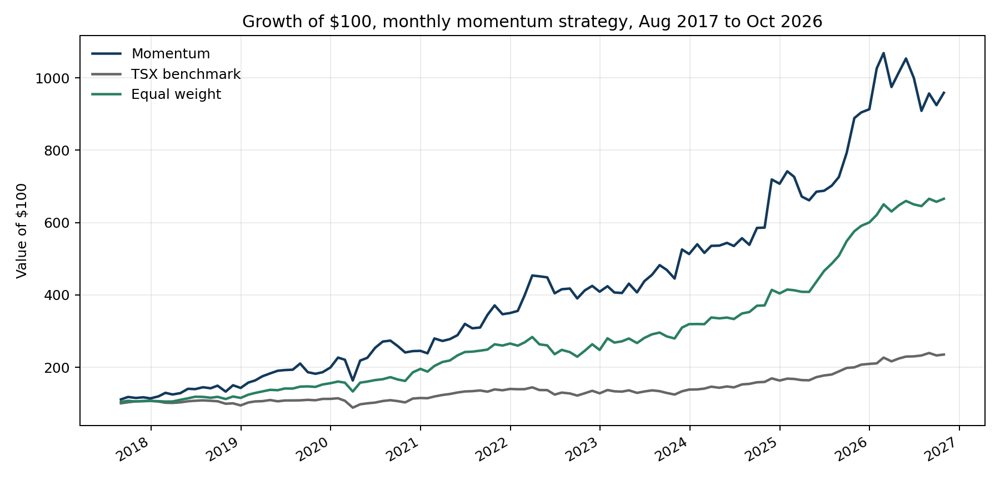
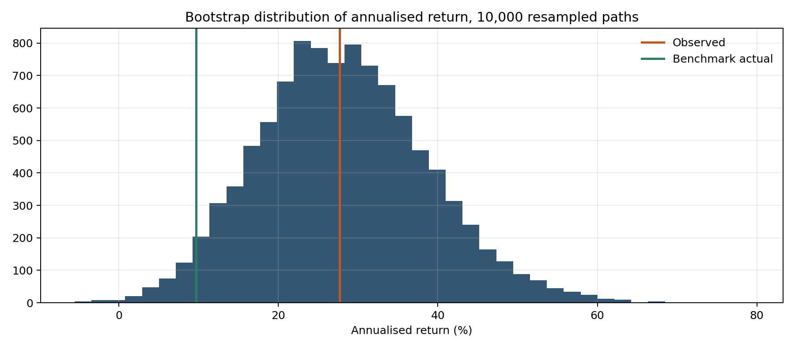
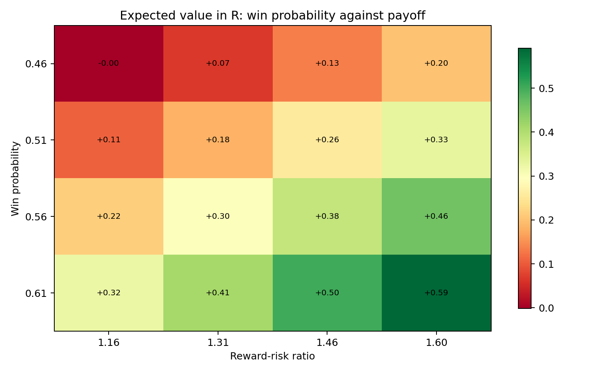
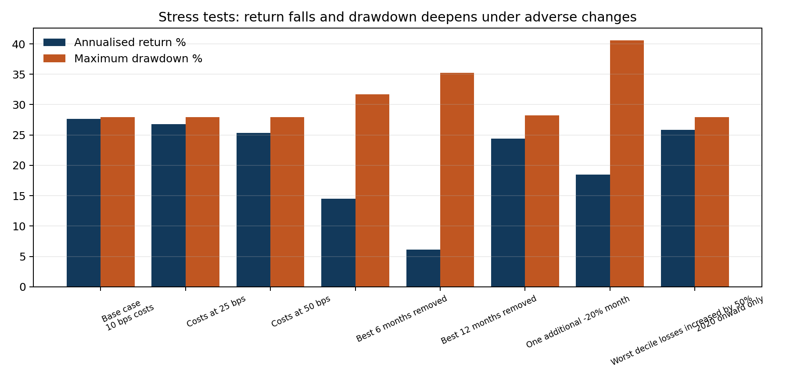

Is This Trading Strategy Actually Profitable?
Monthly 12-1 momentum, top 3 of 10 TSX stocks, Aug 2017 to Oct 2026, 10 bps costs




| criterion |
value |
hurdle |
passed |
| Positive expected value per trade lot |
0.379 |
0.000 |
True |
| Monthly mean return t-statistic at least 2 |
3.269 |
2.000 |
True |
| Bootstrap probability of beating the benchmark at least 80% |
0.967 |
0.800 |
True |
| Sharpe ratio at least equal to the equal-weight universe |
0.998 |
1.241 |
False |
| Maximum drawdown no worse than 25% |
-0.280 |
-0.250 |
False |
| Point-in-time universe with no selection bias |
0.000 |
1.000 |
False |
The strategy was profitable in this sample and beat the benchmark in most bootstrap paths. It still fails the decision rule: its Sharpe ratio is below simply holding the same ten stocks in equal weight, its drawdown breaches the 25% limit, and the stock universe was selected in 2026, so the test is not point-in-time. Verdict: research and paper trading only.